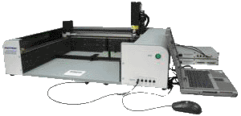
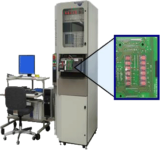
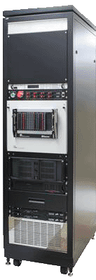
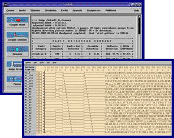
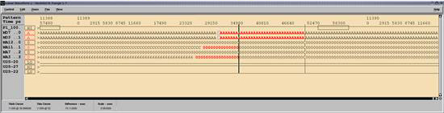
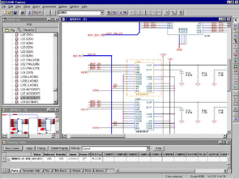
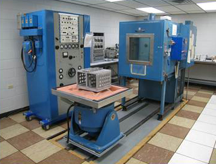
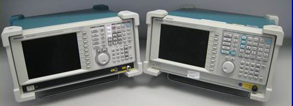
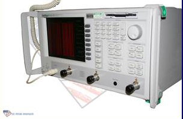
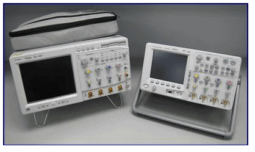

Testing
Automated Tests
Automated tests are developed from existing test specifications, schematics and/or circuit simulations. Tests include a Test Procedure,
Test Software and Test Fixture.
Test Software is written for specific test equipment including Teradyne Spectrum 9100, RSI ATE Station (National Instruments PXI Chassis, Agilent P/S, PC)
and other various GPIB Instruments.
Test fixtures are designed to interface the chosen tester.
Tools used in test software development include: ANSI C, TestStand (National Instruments), LabWindows/CVI (National Instruments) and LabView (National Instruments).
Tools used in test fixtures development include: SolidWorks, OrCad Capture and PCB Editor.

Huntron Automated Probing Station

Teradyne Spectrum 9100

Manual Tests
Manual tests are developed from existing test specifications, schematics and/or circuit simulations. Tests include a Test Procedure and and Test Fixture. Test fixtures
range from basic breakout boxes to more complex assemblies with active circuitry.
ATE Station
Cirquit Simulation
Circuit Simulations can be performed on Analog or Digital circuits.
Simulators used include LASAR (Teradyne digital circuit simulator), OrCAD Capture w/ SPICE
(Simulation Program with Integrated Circuit Emphasis) and National Instruments Multisim.

Lasar Simulation

Lasar Simulation

OrCAD Capture
Technical Data Package
Technical data packages that can be used for procurement can include the development of assembly drawings, PCB layout, schematics and parts lists.
Tools used are OrCAD Capture and PCB Editor, SolidWorks

Thermotron System



Tektronix Scope & Analyzer
Anritsu Vector Network Analyzer
Agilent Scopes